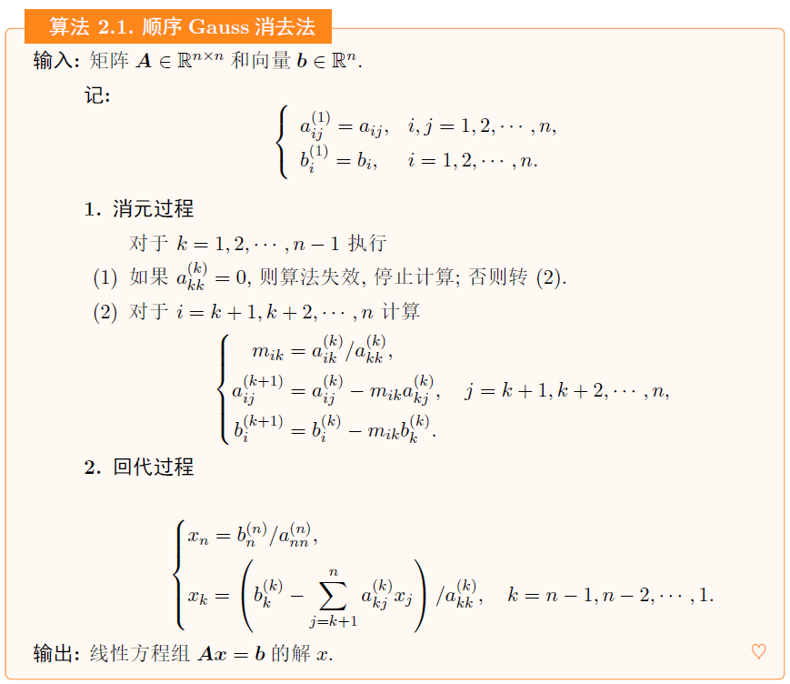

研一课程笔记-数值分析1-3
绪论与预备知识
概论
衡量数值算法的几个标准
衡量算法的优劣有两个标准，一是要有可靠的理论基础，包括收敛性、数值稳定性和算法精度等；二是要有较好的计算复杂度。
数值稳定性
- 数值稳定性即算法对舍入误差的敏感性。舍入误差对计算结果的精确性影响小的算法，具有较好的数值稳定性；反之，算法的数值稳定性差。
算法精度
- 数值算法的精度衡量了近似解对精确解的近似程度。算法的精度越高并不一定导致近似解的误差越小。精度的具体定义依赖于所考虑的问题类型。在偏微分方程的数值算法中我们一般考虑收敛精度，它指的是算法的收敛速率。
计算复杂度
- 计算复杂度指的是通过数值计算解决问题的困难程度。最常见的是时间复杂度和空间复杂度
收敛性
- 算法的收敛性一般指数值解逼近精确解的性质，而对于不同的问题，其定义也是有区别的。例如在迭代算法中，收敛性指的是近似解能够随着迭代过程趋向于精确解，它通常与迭代矩阵的谱半径相关。在偏微分方程数值算法中，收敛性指的是随网格尺寸等参数变化的数值解的收敛性质，它与算法的收敛精度密切相关。
误差理论
误差按照它们的来源可分为以下四种
模型误差：反映实际问题有关量之间关系的计算公式，即数学模型，通常只是近似的。由此产生的数学模型的解与实际问题的解之间的误差称为模型误差。
观测误差：数学模型中包含的某些参数（如时间、长度、电压等等）往往通过观测而获得。由观测得到的数据与实际的数据之间是有误差的。这种误差称为观测误差。
截断误差求解数学模型所用的数值计算方法如果是一种近似的方法，那么只能得到数学模型的近似解，由此产生的误差称为截继误差或方法误差。例如，由Taylor (泰勒)公式，函数 f(x) 可表示为
f(x)=f(0)+f′(0)x+2!f′′(0)x2+⋯+n!f(n)(0)xn+(n+1)!f(n+1)(θx)xn+1,(0<θ<1)
近似即：（此近似公式的误差就是截断误差）
f(x)≈f(0)+f′(0)x+2!f′′(0)x2+⋯+n!f(n)(0)xn
- 舍入误差：由于计算机的字长有限，参加运算的数据以及运算结果在计算机上存放会产生误差
数值计算的误差度量
对于准确值x、近似值 a 和误差限 ϵ ：
e=x−a ，称 e 为近似值 a 的绝对误差，简称误差。
如果 ∣e∣ 的一个上界已知，记为 ϵ ，即 ∣e∣≤ϵ 则称 ϵ 为近似值 a 的绝对误差限或绝对误差界，简称误差限或误差界。
er=xe=xx−a ，称 er 为近似值 a 的相对误差。由于 x 未知，实际上总把 ae作为 a 的相对误差，并且也记为er=ae=ax−a。一般用百分比表示
∣er∣ 的上界，即 ϵr=∣a∣ϵ 称为近似值 a 的相对误差限或相对误差界。
有效数字：由准确值经过四舍五入得到的近似值（经过对于某一绝对误差限舍入后），从它的末位数字到第一位非零数字都是有效数字
- 严格来说：如果 a 的绝对误差限是它的某一位的半个单位，并且从该位到它的第一位非零数字共有 n 位，则称用 a 近似 x 时具有 n 位有效数字。
PS. a−ϵ≤x≤a+ϵ，即 x=a±ϵ.
函数值的误差估计
给定多元函数A=f(x1,x2,⋯,xn) ，且 x1∗,x2∗,⋯,xn∗ 为 x1,x2,⋯,xn 近似值，于是可求 A 的近似值 A∗=f(x1∗,⋯,xn∗)
绝对误差
在点 x=(x1,x2,⋯,xn) 进行泰勒展开，由
f(x1,x2,…,xn)=f(a1,a2,…,an)+i=1∑n∂xi∂f(xi−ai)+2!1i,j=1∑n∂xi∂xj∂2f(xi−ai)(xj−aj)+⋯
其中， ∂xi∂f 表示函数 f 对变量 xi 的偏导数，∂xi∂xj∂2f 表示函数f 对变量 xi 和 xj 的混合偏导数，依此类推。所以：
A∗−A=f(x1∗,⋯,xn∗)−f(x1,x2,⋯,xn)≈j=1∑n∂xj∂f(x)(xj∗−xj)
PS.这个等式也可f以用中值定理直接得出
由 e(xi)=xj∗−xj ，也即：
e(A)≈j=1∑n∂xj∂f(x)e(xj),∣e(A)∣⩽j=1∑n∣∣∂xj∂f(x)∣∣∣e(xj)∣
PS.

相对误差
er(A)=Ae(A)≈j=1∑nf(x)xj∂xj∂f(x)er(xj)
- er(xj)=xje(xj) ，即 e(xj)=er(xj)⋅xj
- 因子 f(x)xj∂xj∂f(x) 反映 xj 相对误差 er(xj) 对相对误差 er(A) 影响的程度
函数值误差的代数运算
- f(x,y)=xy
- e(xy)≈ye(x)+xe(y)
- er(xy)≈er(x)+er(y)
- f(x,y)=x/y
- e(x/y)≈y1e(x)−y2xe(y)
- er(x/y)≈er(x)−er(y)
- f(x,y)=x±y
- e(x±y)≈e(x)±e(y)
- er(x±y)≈x±yxer(x)±x±yyer(y) ， x±y=0
- f(x)=x
- er(x)≈21er(x)
- f(x)=xn
- er(xn)≈ner(x)
几点注意：
- 对于 er(x−y)≈x−yxer(x)−x−yyer(y) ，如果 x 与 y 非常接近，会出现很大计算误差
- 同样的，对于 e(x/y)≈y1e(x)−y2xe(y) ，若 y→0，同理
算法在数值计算中应注意的几个问题
- 要有数值稳定性。即能控制舍入误差的传播
- 两数相加要防止较小的数加不到较大的数中所引起的严重后果
- 避免两个相近的近似值相减，以免严重损失有效数字
- 除法运算中，要尽量避免除数的绝对值远小于被除数的绝对值
范数
向量范数
定义向量大小的量，又称为向量的模。是定义在 Rn 上的实值函数 ∥⋅∥，满足：
- ∥x∥≥0 且仅 x=0,∥x∥=0
- ∥kx∥=∣k∣⋅∥x∥,k∈R
- ∥x+y∥≤∥x∥+∥y∥
证明是向量范数，只需要满足上面三个条件
三种向量范数(p−范数)
对 Rn 中的任一向量 x=(x1,x2,⋯,xn)T
∥x∥1=i=1∑n∣xi∣∥x∥2=i=1∑nxi2∥x∥∞=1⩽i⩽nmax∣xj∣
范数等价性定理
设 ∥⋅∥α,∥⋅∥β 是 Rn 上的任意两种向量范数，则存在与向量 x 无关的常数 m 和 M(0<m<M)， 使下列关系成立
m∥x∥α⩽∥x∥β⩽M∥x∥α,∀x∈Rn
此外：

摘自 张绍飞，赵迪. 矩阵论教程[M]. 机械工业出版社，2012. p98
矩阵范数
用于定义矩阵“大小”的量，又称为矩阵的模，定义在 Rn×n 上的实值函数 ∥⋅∥，满足对任意矩阵 A,B：
- ∥A∥≥0 且仅 A=O,∥A∥=0
- ∥kA∥=∣k∣⋅∥A∥,k∈R
- ∥A+B∥≤∥A∥+∥B∥
- ∥AB∥≤∥A∥⋅∥B∥
矩阵范数相容性
对于给定的向量范数 ∥⋅∥ 和矩阵范数 ∥⋅∥ ， 如果对任一个 x∈Rn 和任一个 A∈Rn×n， 满足 ∥Ax∥⩽∥A∥∥x∥ 则称所给的矩阵范数与向量范数是相容的
当在同一个问题中需要同时使用矩阵范数和向量范数时，这两种范数应当是相容的
矩阵的算子范数定理
设在 Rn 中给定了一种向量范数，对任一矩阵 A∈Rn×n， 令：
∥A∥=∥x∥=1max∥Ax∥(1.3.1)
则由式1.3.1定义的 ∥⋅∥是一种矩阵范数，并且它与所给定的向量范数相容
称式1.3.1所定义的矩阵范数为从属于所给定向量范数的矩阵范数，又称为矩阵的算子范数
max∥x∥=1∥Ax∥ 表示矩阵 A 作用在单位范数向量 x 上所得到的结果的最大范数。具体来说：
- 对于给定的矩阵 A，我们考虑所有单位范数向量 x，即满足 ∥x∥=1 的向量。
- 我们将矩阵 A 作用在每一个单位范数向量 x 上，得到向量 Ax。
- 然后计算每个 Ax 的范数 ∥Ax∥。
- 最终，我们找到使得 ∥Ax∥ 最大的单位范数向量 x，即求解 max∥x∥=1∥Ax∥。
证明为什么是一种矩阵范数：
设给定的向量范数为 ∥⋅∥p，则从属于向量范数 ∥⋅∥p 的矩阵范数仍记为 ∥⋅∥p，即
∥A∥p=∥x∥p=1max∥Ax∥p
矩阵 p−范数
设 A=[aij]∈Rn×n，则
∥A∥1=1⩽j⩽nmaxi=1∑n∣aij∣∥A∥2=λmax(ATA)∥A∥∞=1⩽i⩽nmaxj=1∑n∣aij∣
其中 λmax(ATA)表示矩阵 ATA 的最大特征值。
矩阵范数 ∥A∥1,∥A∥2,∥A∥∞ 又分别称为矩阵的列范数、谱范数和行范数
佛罗贝尼乌斯范数
另外还有一种常用的矩阵范数，就是Frobenius(佛罗贝尼乌斯) 范数，又称为Euclid 范数，
∥A∥F=i,j=1∑naij2
其中 A=[aij]∈Rn×n，又可以记作 ∥A∥E
可以证明,∥⋅∥F 与向量范数 ∥⋅∥2 相容，即
∥Ax∥2⩽∥A∥F∥x∥2,A∈Rn×n,x∈Rn
但 ∥⋅∥F 不从属于任何向量范数，即不是算子范数
算子范数的估计
单位矩阵 I 的任何一种算子范数都有
∥I∥=∥x∥=1max∥Ix∥=1
设矩阵 A∈Rn×n 的某种范数 ∥A∥<1 ，则 I±A 为非奇异矩阵，并且当该种范数为算子范数时，下式成立
∥∥(I±A)−1∥∥⩽1−∥A∥1
若 I±A 奇异，即 (I±A)⋅x=0，展开并移项，即 x=∓Ax，取范数，即 ∥x∥=∥Ax∥≤∥A∥⋅∥x∥
即 ∥A∥≥1，矛盾
当然这里还涉及到一个点，即矩阵范数相容性，即满足 ∥Ax∥⩽∥A∥∥x∥
此外也可以通过这种方式来证明：
取
ei=⎝⎛010⎠⎞
则：
x⋅ei=⎣⎡000x1x2x3000⎦⎤
取范数，即 ∥x∥=∥x⋅ei∥，相当于我们构建了一个向量范数与矩阵范数的等式
那么 ∥Ax∥=∥Ax⋅ei∥≤∥A∥⋅∥x⋅ei∥=∥A∥⋅∥x∥
由 (I−A)(I−A)−1=I ，则 (I−A)−1−A⋅(I−A)−1=I，即 (I−A)−1=A⋅(I−A)−1+I
两边同取算子范数：∥(I−A)−1∥=∥A⋅(I−A)−1∥+∥I∥≤∥A∥⋅∥(I−A)−1∥+∥I∥
移项，即 (1−∥A∥)∥(I−A)−1∥≤∥I∥=1，而 ∥A∥<1，故上式得证
PS.一个方阵是奇异的，如果它的行列式为零。非奇异矩阵则是行列式非零的方阵。
逆矩阵：奇异矩阵是不可逆的，因为逆矩阵的存在要求矩阵的行列式不为零。因此，奇异矩阵没有逆矩阵。
秩：奇异矩阵的秩小于其阶数。一个 n×n 的奇异矩阵的秩最多为 n−1。
零空间：奇异矩阵的零空间（也称为核）不仅包含零向量，还包含其他非零向量。这是因为奇异矩阵将某些向量映射到零向量。
特征值：奇异矩阵的特征值中至少有一个为零。这是因为特征值是行列式与矩阵迹的根，而奇异矩阵的行列式为零。
解的存在性：对于线性方程组 Ax=b，其中 A 是奇异矩阵，解可能不存在，或者有无穷多个解。这取决于向量 b 是否位于矩阵 A 的列空间中。
线性方程组的解法
主要讨论如下形式的线性方程组的求解问题.
⎩⎨⎧a11x1+a12x2+⋯+a1nxn=b1,a21x1+a22x2+⋯+a2nxn=b2,⋮an1x1+an2x2+⋯+annxn=bn,(2.1.1)
也即：
Ax=b
其中
A=⎝⎛a11⋮an1⋯⋯a1n⋮ann⎠⎞∈Rn×n,x=⎝⎛x1⋮xn⎠⎞∈Rn,b=⎝⎛b1⋮bn⎠⎞∈Rn.
设系数矩阵 A 非奇异，即 det(A)=0，则方程组有唯一解向量 x.
Gauss 消去法
由消元和回代两部分组成
消元即是对增广矩阵 [A,b] 做初等行变换，经过 n−1 次消元得到
(A(n),b(n))=⎝⎛a11(1)O⋯a22(2)⋯⋯⋱a1n(1)a2n(2)⋮ann(n)b1(1)b2(2)⋮bn(n)⎠⎞
即线性方程组：
⎩⎨⎧a11(1)x1+a12(1)x2+⋯+a1n(1)xn=b1(1),a22(2)x2+⋯+a2n(2)xn=b2(2),⋮ann(n)xn=bn(n).
通过逐步回代，依次求出 xn−1,xn−2,…,x1
顺序Gauss 消去法

消元过程的第 k 步，对矩阵需做 (n−k)2 次乘法运算及 (n−k) 次除法运算，对右端向量需作 (n−k) 次乘法运算，所以消去过程总的乘除法运算工作量为
k=1∑n−1(n−k)2+k=1∑n−1(n−k)+k=1∑n−1(n−k)=31n3+21n2−65n.
回代过程中，计算每个 xk 需作 (n−k+1) 次乘除法运算，其工作量为
k=1∑n(n−k+1)=21n(n+1).
算法运行条件
要使得顺序消去法可运行，必须使得前 n−1 个主元素 akk(k)(k=1，2，…，n−1) 均不为零，其充要条件是系数矩阵 A 的前 n−1 个顺序主子式不为零，即
Dk=∣∣a11(1)⋮ak1(1)⋯⋯a1k(1)⋮akk(1)∣∣=0,k=1,2,⋯,n−1.
为什么运行条件是主元素不为零充要是系数主子式不为零，这个其实也可以用LU分解的思路来思考
当主元素 akk(k) 均不为零时，我们可以考虑使用LU分解的思路来证明对应系数矩阵的顺序主子式不为零。
假设我们有一个 n×n 的方阵 A，其顺序主子式都不为零，即 ∣Ak∣=0，其中 Ak 表示 A 的第 k 阶顺序主子式。
我们知道LU分解可以写为 A=LU，其中 L 是单位下三角矩阵，U 是上三角矩阵。我们可以将 A 分解为：
A=⎣⎡a11a21⋮an10a22⋮an2⋯⋯⋱⋯00⋮ann⎦⎤=⎣⎡1l21⋮ln101⋮ln2⋯⋯⋱⋯00⋮1⎦⎤⎣⎡u110⋮0u12u22⋮0⋯⋯⋱⋯u1nu2n⋮unn⎦⎤
我们可以看到，对于LU分解中的 U 矩阵，其对角线上的元素 ukk 对应于原矩阵 A 的主元素 akk(k)。由于主元素均不为零，因此LU分解中的 U 矩阵的对角线上的元素 ukk 也均不为零。
现在我们来看LU分解中的 L 矩阵。由LU分解的性质可知，L 的对角线上的元素均为1，而且 L 的第 k 行第 j 列的元素 lkj 是原矩阵 A 的第 j 阶顺序主子式与 U 的第 k 阶顺序主子式的商。由于 A 的顺序主子式都不为零，因此 L 的元素 lkj 也不为零。
一个问题
前面我们提到，除法运算中，要尽量避免除数的绝对值远小于被除数的绝对值
如果对角线元素 aii 很小（导致 ∣mik∣ 很大），就会导致很大的误差
列主元素Gauss 消去法
第 k 次消元之前，通过行变换将 aik(k)(i=k，k+1,…，n) 中绝对值最大的元素交换到第 k 行的主对角线位置上，然后进行消元计算，即：
其他过程同顺序法，算法要求各个列的主元素不为零
对于列主元素交换，相当于多乘了一个初等行变换矩阵，所以最终还是可以化为一个LU分解的形式
比如乘以
P=⎣⎡010100001⎦⎤
交换一二行
LU分解及其与Gauss消去的关系
考试不考，仅供拓展思路
对于 Ax=b 将 A 分解为 A=LU，其中 L 是下三角矩阵， U 是上三角矩阵，则可将原方程化为：
Ly=b,Ux=y
先由 Ly=b 解出 y，再由 Ux=y 解出 x
而Gauss消去也可以看作一个LU分解的过程，即：
L(n−1)L(n−2)⋯L1⋅A=A(n)
其中 L1 对应于将第一列非主对角线元素都化为零的过程，即
L1=⎣⎡1l1l2⋮ln−1010⋮0001⋮0⋯⋯⋯⋯00001⎦⎤
其中 li 对应 −mi1 。以此类推
不妨设 L=(L(n−1)L(n−2)⋯L1)−1,U=A(n)，显然，L 是下三角矩阵，A 为上三角矩阵，即为 A=LU
矩阵条件数与病态方程组
设A、ΔA∈Rn×n，b、Δb∈Rn，A非奇异，b=0，x 是方程组 Ax=b 的解向量。若 ∥ΔA∥<∥A−1∥1 ，则有
方程组
(A+ΔA)(x+Δx)=b+Δb
有唯一解 x+Δx
下列估计式成立：
∥x∥∥Δx∥⩽1−∥A−1∥∥ΔA∥∥A∥∥A−1∥(∥A∥∥ΔA∥+∥b∥∥Δb∥)
对于第一点，我们需要证明 A+ΔA 非奇异，证明关键其实是该定理：
设矩阵 A∈Rn×n 的某种范数 ∥A∥<1 ，则 I±A 为非奇异矩阵，并且当该种范数为算子范数时，下式成立
∥∥(I±A)−1∥∥⩽1−∥A∥1
由 A+ΔA=A(I+A−1ΔA)，其中 A 非奇异，即证 I+A−1ΔA 非奇异，由上定理，即证 ∥A−1ΔA∥<1
而 ∥A−1ΔA∥⩽∥A−1∥∥ΔA∥<1，故得证
对于第二点，对原方程组进行展开，并代入 Ax=b
Ax+A⋅Δx+ΔA⋅x+ΔA⋅Δx=b+ΔbA⋅Δx+ΔA⋅x+ΔA⋅Δx=ΔbΔx=A−1Δb−A−1ΔAx−A−1ΔAΔx
两边同时取范数，由矩阵范数相容性，即 ∥b∥=∥Ax∥⩽∥A∥∥x∥
∥Δx∥=∥A−1Δb∥+∥A−1ΔA⋅x∥+∥A−1ΔAΔx∥≤∥A−1∥∥Δb∥+∥A−1∥∥ΔA∥∥x∥+∥A−1∥∥ΔA∥∥Δx∥
即
(1−∥A−1∥∥ΔA∥)∥x∥∥Δx∥⩽∥A∥∥A−1∥∥b∥∥Δb∥+∥A−1∥∥ΔA∥
由第一点 ∥A−1∥∥ΔA∥<1，上式得证
一个细节就是这里用到的都是算子范数，使得 矩阵范数与向量范数相容，从而满足范数相容性
对于上面定理第二点的式子，我们可以改写成：
∥x∥∥Δx∥⩽1−∥A∥∥A−1∥∥A∥∥ΔA∥∥A∥∥A−1∥(∥A∥∥ΔA∥+∥b∥∥Δb∥)
那么 ∥A∥∥A−1∥ 越小，A,b 的误差对解向量的相对误差影响就越小，反之则大。
条件数与病态
关于病态方程组求解
对于病态方程组的求解：
- 用更高精度的运算
- 平衡方法：A 元素数量级差别很大时进行行平衡或列平衡
- 残差矫正法：病态但不特别严重时的一种缓解病态方法
迭代法
迭代法是目前求解大规模稀疏线性方程组的主要方法之一.
迭代法的一般形式及其收敛性
对于线性方程组，将系数矩阵分解为两个矩阵的差，即 A=N−P ，代入 Ax=b，即：
Nx=Px+bx=N−1Px+N−1b
记 G=N−1P,d=N−1b 代入，得 x=Gx+d ，取 x(0)∈Rn×n 作为初始近似解，使用递推式
x(k+1)=Gx(k)+d(k=0,1,⋯)
产生一个向量序列，当 k 足够大时， xk 可以看作原方程的近似解
序列收敛性
只有在迭代法收敛的情况下，用它所产生的向量序列 {x(k)} 中的向量作为方程组的近似解才有意义，而且，k 越大，x(k) 作为方程组的解就越精确。关于向量序列收敛定义如下：
设有向量序列
x(k)=(x1(k),x2(k),⋯,xn(k))⊤(k=0,1,⋯)
如果存在常向量x∗=(x1∗,x2∗,⋯,xn∗)⊤，使得
k→∞limxi(k)=xi∗(i=1,2,⋯,n)
则称向量序列{x(k)}收敛于常向量x∗，记为
k→∞limx(k)=x∗
相关定理
设有向量序列{x(k)}和常向量 x∗，如果对某种范数，有
k→∞lim∥∥x(k)−x∗∥∥=0
则必有
k→∞limx(k)=x∗
由向量范数等价性，原条件即：
k→∞lim1⩽i⩽nmax∣∣xi(k)−xi∗∣∣=0
一个后面用到的等式
x(k)−x∗=i=k∑∞(x(i)−x(i+1))
要证明这个公式，我们从Jacobi迭代法的定义出发。Jacobi迭代法用于求解线性方程组 Ax=b，迭代公式为：
x(k+1)=D−1(b−(L+U)x(k))
其中 A=D+L+U，D 是 A 的对角矩阵，L 是 A 的严格下三角矩阵，U 是 A 的严格上三角矩阵。
我们要证明：x(k)−x∗=∑i=k∞(x(i)−x(i+1))
首先，我们知道对于任何迭代步 k，有以下关系：
x(k)−x∗=(x(k)−x(k+1))+(x(k+1)−x∗)
利用这一点，我们可以递推：
x(k+1)−x∗=(x(k+1)−x(k+2))+(x(k+2)−x∗)
这样继续下去，我们得到：
x(k)−x∗=(x(k)−x(k+1))+(x(k+1)−x(k+2))+(x(k+2)−x(k+3))+⋯
在极限的意义下：
x(k)−x∗=i=k∑∞(x(i)−x(i+1))
这个公式成立的关键在于迭代过程的收敛性，即 x(i)→x∗ 当 i→∞。因此，尾项 (x(i)−x∗) 在极限下趋于零。
谱半径与收敛性
设 n×n 矩阵 G 的特征值是 λ1,λ2,⋯,λn ,称
ρ(G)=1⩽i⩽nmax∣λi∣
为矩阵 G 的谱半径.
谱半径与收敛性的定理
- 定理：任意一个矩阵的谱半径与其范数是有关系的，即任一矩阵A的谱半径不大于A的任一与某一向量范数相容的矩阵范数，即
ρ(A)⩽∥A∥.
按照谱半径的定义 ρ(A)=max1≤i≤n∣λi∣， 其中，λi(i=1,2,⋯,n)为 n 阶方阵 A 的特征值
设 x 为对应于 λ 的 A 的特征向量，则有 λx=Ax，两边取范数可得
∣λ∣∥x∥⩽∥A∥∥x∥.
因为 x 为非零向量，∥x∥=0，故有∣λ∣⩽∥A∥.
上述这个不等式对A的任何特征值均成立，即可得 ρ(A)⩽∥A∥.
- 对上定理，利用矩阵的Jordan 标准型得：设 A 是任意 n 阶矩阵, 则 A 的 k 次幂 Ak→0 ( 当 k→+∞) 的充要条件为谱半径 ρ(A)<1
Jordan标准型是一种特殊形式的矩阵，通常用于简化矩阵的分析和计算特征值、特征向量等问题。对于一个给定的方阵，其Jordan标准型可以通过相似变换得到。以下是关于Jordan标准型的一些重要概念：
- 定义：对于一个 n×n 的方阵 A，存在一个可逆矩阵 P，使得 P−1AP 是Jordan标准型。Jordan标准型是一个块对角矩阵，其中每个块称为Jordan块。
- Jordan块：Jordan块是一个形式为 λI+N 的矩阵，其中 λ 是矩阵的特征值，I 是单位矩阵，N 是上三角矩阵，其对角线元素为0或者都是1。Jordan块的大小取决于特征值的代数重数和几何重数。
- 特征值和特征向量：Jordan标准型将矩阵的特征值和特征向量整合在一起，使得特征向量更易于计算和理解。每个Jordan块对应一个特征值，而特征向量则可以从Jordan块中推导出来。
- 定理：对任意的向量 d， 迭代法收敛的充分必要条件是 ρ(G)<1
对迭代形式 x(k)=Gx(k−1)+d 和最终解 x∗=Gx∗+d 做差并递推：
x(k)−x∗=G(x(k−1)−x∗)=⋯=Gk(x(0)−x∗)
若收敛，则 x(k)−x∗→0 ，即 Gk(x(0)−x∗)→0，即 Gk→0,k→∞，由上引理得 ρ(G)<1
同理可证充分性
收敛性判断
用迭代矩阵的谱半径判断迭代公式是否收敛往往不容易，可以使用如下定理
如果矩阵 G 的某种范数∥G∥<1，则
方程组 x=Gx+d 的解 x∗ 存在且唯一；
对于迭代公式 x(k+1)=Gx(k)+d 有
k→∞limx(k)=x∗,∀x(0)∈Rn
并且下列两式成立
∥∥x(k)−x∗∥∥⩽1−∥G∥∥G∥k∥∥x(1)−x(0)∥∥(2.3.6)
∥∥x(k)−x∗∥∥⩽1−∥G∥∥G∥∥∥x(k)−x(k−1)∥∥(2.3.7)
对于第一点，因 ∥G∥<1 , 根据定理算子范数的估计，可知矩阵 I−G非奇异， 其中 I 是单位矩阵
对于第二点，由 ∥G∥<1 ，则 ρ(G)<1 ，即迭代法收敛，则 k→∞limx(k)=x∗
则对 x(k)−x∗=∑i=k∞(x(i)−x(i+1)) 两边取范数，由∥x+y∥≤∥x∥+∥y∥ 得：
∥∥x(k)−x∗∥∥⩽i=k∑∞∥∥x(i)−x(i+1)∥∥=i=k∑∞∥∥Gi(x(0)−x(1))∥∥⩽i=k∑∞∥G∥i∥∥x(0)−x(1)∥∥=1−∥G∥∥G∥k∥∥x(1)−x(0)∥∥,
PS. x(k)−x∗=∑i=k∞(x(i)−x(i+1)) 这个等式上面证过
对于2.3.7
x(k)−x∗=G(x(k−1)−x∗)=G(x(k−1)−x(k))+G(x(k)−x∗).
则：
∥∥x(k)−x∗∥∥⩽∥G∥∥∥x(k−1)−x(k)∥∥+∥G∥∥∥x(k)−x∗∥∥,∥∥x(k)−x∗∥∥⩽1−∥G∥∥G∥∥∥x(k)−x(k−1)∥∥.
Jacobi 迭代法
若系数矩阵 A=(aij)∈Rn×n 满足条件 aii=0(i=1,2,⋯,n)，则将 A 分解为 A=D+L+U
其中 D 为对角矩阵，L 为严格下三角矩阵，U 为严格上三角矩阵
相当于 D=diag(aii) 且显然 D−1 存在
对于一般形式，取 N=D,P=−(L+U) ，得迭代式：
x(k+1)=−D−1(L+U)x(k)+D−1b(k=0,1,⋯)
其中 x(0)∈Rn 任取，迭代矩阵：
GJ=−D−1(L+U)
此外，d=D−1b
由 D−1=diag(aii−1)，分量形式为：
xi(k+1)=(−j=1∑naijxj(k)+bi)/aii(i=1,2,…,n;k=0,1,…)xi(k+1)=−j=1∑naiiaijxj(k)+aiibi(i=1,2,…,n;k=0,1,…)
由定理：对任意的向量 d， 迭代法收敛的充分必要条件是 ρ(G)<1，得： Jacobi 迭代法收敛的充分必要条件是 ρ(GJ)<1
由定理：矩阵 G 的某种范数∥G∥<1，则方程组 x=Gx+d 的解 x∗ 存在且唯一，得 ：如果 ∥GJ∥<1, 则 Jacobi 迭代法收敛.
引理：
若矩阵 A∈Rn×n 是主对角线按行 (或按列) 严格占优阵，则 A 是非奇异矩阵.
主对角线按行 (或按列) 严格占优阵，即满足：
∣aii∣>j=ij=1∑n∣aij∣,i=1,2,⋯,n.
即主对角线元素大于该行非对角线元素绝对值之和
如果系数矩阵A是主对角线按行(或按列) 严格占优阵，则用Jacobi迭代法求解必收敛.
若 A 是对称正定矩阵，则雅可比迭代收敛的充要条件是 2D−A 也是对称正定矩阵.
Gauss-Seidel迭代法
在迭代法一般形式中，取N=D+L,P=−U，形成以下的迭代公式
x(k+1)=−(D+L)−1Ux(k)+(D+L)−1b(k=0,1,⋅⋅⋅)
其中：
GG=−(D+L)−1Ud=(D+L)−1b
使用时为了避免求 D+L 的逆矩阵，可以通过这种方式改写：
(D+L)x(k+1)=−Ux(k)+bDx(k+1)=−Lx(k+1)−Ux(k)+bx(k+1)=−D−1Lx(k+1)−D−1Ux(k)+D−1b
分量形式：
xi(k+1)=−j=1∑i−1aiiaijxj(k+1)−j=i+1∑naiiaijxj(k)+aiibi(i=1,2,…,n;k=0,1,…)
收敛的充分必要条件是 ρ(GG)<1
∥GG∥<1 则GS法收敛
系数矩阵 A 主对角线严格占优，则GS法必收敛
系数矩阵 A 正定，则GS法必收敛（正定则所有特征值非负）
Gauss-Seidel迭代法相对于Jacobi迭代法的优点
在Jacobi迭代过程中，在计算解向量 x(k+1) 的第 i 分量 xi(k+1) 时，前面的 i−1 个分量的新值 x1(k+1),x2(k+1),⋯,xi−1(k+1) 已经计算出来,从而在计算 xi(k+1) 时，前面的分量用新值 x1(k+1),x2(k+1),⋯,xi−1(k+1) 后面的分量还没有计算出来，利用旧值 xi+1(k),xi+2(k),⋯,xn(k) 来计算可以节约存储，加快速度
注意观察两种方法迭代式的特点：
Jacobi： Dx(k+1)=(b−(L+U)x(k))
Gauss-Seidel：(D+L)x(k+1)=b−Ux(k)
我们可以看到 Jacobi 只利用了对角信息( A≈D )，表现为每轮迭代只利用上一轮的结果；
Gauss-Seidel 利用了对角+下三角的信息( A≈D+L )，表现为及时利用本轮已经更新的结果。
矩阵特征值与特征向量计算
幂法
幂法主要用于计算矩阵的按模为最大的特征值和相应的特征向量。即：
设 n×n 实矩阵 A 具有 n 个线性无关的特征向量x1,x2,⋅⋅⋅,xn，其相应的特征值λ1,λ2,⋅⋅⋅,λn满足不等式
∣λ1∣>∣λ2∣⩾∣λ3∣⩾⋅⋅⋅⩾∣λn∣(3.1)
其中Axi=λixi(i=1,2,⋅⋅⋅,n)。现在要求出 λ1 和相应的特征向量。
任取一 n 维非零向量u0，从 u0 出发，按照如下的递推公式
uk=Auk−1(k=1,2,⋅⋅⋅)(3.2)
可产生一个向量序列 {uk}，分析这一序列的收敛情况，可从中找出计算 λ1 和相应的特征向量的方法。
因 n 维向量组 x1,x2,⋅⋅⋅,xn 线性无关，故对于向量 u0 ，必存在唯一的不全为零的数组α1,α2,⋅⋅⋅,αn，使得
u0=α1x1+α2x2+⋅⋅⋅+αnxn=i=1∑nαixi
所以由Axi=λixi(i=1,2,⋅⋅⋅,n) ， Aku0=Ak∑1naixi=∑1naiλikxi
下面会用到
由式(3.2)可得
uk=Auk−1=A2uk−2=⋯=Aku0=α1Akx1+α2Akx2+⋯+αnAkxn=α1λ1kx1+α2λ2kx2+⋯+αnλnkxn=λ1k[α1x1+α2(λ1λ2)kx2+⋯+αn(λ1λn)kxn](3.3)
设 α1=0。由于有式(3.1)成立，故从式(3.3)可看出，当 k 充分大时，有
uk≈λ1kα1x1
uk≈λ1kα1x1=λ1(λ1k−1α1x1)
所以实际上 λ1k−1α1x1 也可以看作一个特征向量
因为矩阵的特征向量与任何一个非零常数相乘之后仍是该矩阵的属于同一个特征值的特征向量，所以，当 k 充分大时，由迭代公式(3.2)产生的 uk 可近似地作为矩阵 A 的属于 λ1 的特征向量。迭代公式(3.2)实质上是
uk=Aku0
归一化
实际计算时，为了避免迭代向量 uk 的模过大(当|λ1∣>1)或过小(当∣λ1∣<1),通常每迭代一次都对 uk 进行归一化，使其范数 (∥⋅∥2或∥⋅∥∞) 等于1。因此，实际使用的迭代公式是
{yk−1=∥uk−1∥uk−1uk=Ayk−1(k=1,2,⋅⋅⋅)(3.4)
范数为1，即：
∥yk∥=∥∥uk∥uk∥=∥uk∥∥uk∥=1
由 （3.4）:
uk=∥uk−1∥Auk−1=∥Auk−2∥A2uk−2=⋅⋅⋅=∥Ak−1u0∥Aku0
又：Aku0=∑1naiλikxi：
yk=∥uk∥uk=∥Aku0∥Aku0=(∣λ1∣λ1)k∥∥α1x1+α2(λ1λ2)kx2+⋯+αn(λ1λn)kxn∥∥α1x1+α2(λ1λ2)kx2+⋯+αn(λ1λn)kxn(3.5)
注意这个上下提出 λ1k，范数中提出后要加绝对值
由于 ∣λ1∣>∣λ2∣⩾∣λ3∣⩾⋅⋅⋅⩾∣λn∣，故当 k→∞ :
- λ1>0，则 yk→∥α1x1∥α1x1 ，即 yk 有确定的极限
- λ1<0，则 yk 的各个分量之模有确定的极限，其各个分量的正负号每迭代一次就改变一次
λ1 计算方法1：2范数
关于 λ1 的 计 算，有两种方法可供选择。第 一 种方法，在式(3.4) 中使用范数 ∥⋅∥2 ，并且令
βk=yk−1Tuk(3.6)
那么，由于 uk=Ayk−1 ，并根据式(3.5)可得
k→∞limβk=∥α1x1∥2α1x1TA∥α1x1∥2α1x1=∥α1x1∥22α12x1Tx1λ1=λ1
注意这里使用的二范数的定义∥x1∥22=x1Tx1, ∥α1x1∥22=α12x1Tx1
把式(3.4)和式(3.6)结合在一起，得到第一种幂法迭代格式：
⎩⎨⎧任取非零向量 u0∈Rnηk−1=u(k−1)Tuk−1yk−1=uk−1/ηk−1uk=Ayk−1βk=yk−1Tu∗(k=1,2,⋅⋅⋅)
ηk−1=u(k−1)Tuk−1 就是2范数
yk−1=uk−1/ηk−1 对应归一化的过程
当∣βk−βk−1∣/∣βk∣⩽ε (允许误差)时，选代终止，以当前的 βk 作为 λ1 的近似值，以 yk−1作为 A 的属于 λ1 的特征向量。
不用 ∣βk−βk−1∣ 作为判断依据，避免 βk 本身就很小的情况
λ1 计算方法2：无穷范数
令：
βk=erTyk−1erTuk
这里假定 uk−1的第 r 个分量为模最大的分量，当 k 足够大之后，r 保持定值；er 是 n 维基本单位向量，它的第 r 个分量为1，其余分量为零。由于 uk=Ayk−1，并根据式(3.5)可得
k→∞limβk=erTx1erTAx1=λ1
把式(3.4)和(3.8)结合在一起，得到第二种幂法迭代格式：
⎩⎨⎧任取非零向量 u0=(h1(0),⋅⋅⋅,hn(0))T∣hr(k−1)∣=max1⩽j⩽n∣hj(k−1)∣yk−1=uk−1/∣hr(k−1)∣uk=Ayk−1=(h1(k),⋅⋅⋅,hn(k))Tβk=sgn(hrk−1)hr(k)(k=1,2,⋯)(3.9)
终止迭代的控制也用∣βk−βk∣/∣βk∣⩽ε,当前的 βk 和 yk−1即分别作为 λ1 和与其相应的特征向量。在迭代格式(3.9)中，∣hrk−1∣=∥uk−1∥∞ ，sgn(hr(k−1))=erTyk−1,hr(k)=erTuk。
收敛速度
幂法的收敛速度与比值∣∣λ1λ2∣∣ [式(3.1)的情况] 或∣∣λ1λm+1∣∣ [式(3.10)的情况] 有关，比值越小，收敛速度越快。
此外，当矩阵A没有n个线性无关的特征向量，幂法仍然可以使用，但收敛速度特别慢，应改用其他方法。
反幂法
幂法主要用于计算矩阵的按模为最小的特征值 λn 和相应的特征向量。
因 A 非奇异，故λi=0(i=1,2,⋅⋅⋅,n)。由
Axi=λixi
得
A−1xi=λi1xi(i=1,2,⋅⋅⋅,n)
所以，λn1 是矩阵 A−1 的按模最大的特征值，xn 是 A−1 的属于λn1的特征向量。于是，对矩阵 A−1 使用幂法迭代格式(3.7)或式(3.9)就可求出 λn1 (从而求出 λn) 以及相应的特征向量。
平移法求任意特征值及其加速
设已知数 μ 是 n×n 矩阵 A 的某个特征值 λi的近似值，并满足
0<∣λ,−μ∣<∣λi−μ∣,1⩽i⩽n,i=s
于是，对矩阵A−μI 实行反幂法迭代，就可求出 A 的特征值 λi 。及其相应的特征向量。其中 μ 称为平移量。具体说，就是把反幂法迭代格式中的 Auk=yk−1改为
(A−μI)uk=yk−1
当 k 足够大时，取 λs≈βk−1+μ ，其相应的特征向量近似地等于yk−1。
由于幂法和反幂法的迭代是否收敛依赖于特征值的分布情况，因此实际使用时很不方便， 特别是不适合于自动计算。
这里我们使用反幂法迭代而非幂法，因为我们不容易通过平移来确保平移后特征值的绝对值最大，但容易使其尽量小
平移加速收敛
为方便说明，假设 A 的特征值均为实数且大于零，则B=A−μI，平移前的收敛速度 ∣∣λ1λ2∣∣，平 移后的收敛速度 ∣∣λ1(B)λ2(B)∣∣。 对任意的0<μ<λn，我们有：
∣λ1(B)λ2(B)∣<∣∣λ1λ2∣∣
也就意味着平移可以加速收敛
Rayleigh( 瑞利 ）商加速

Reference
https://blog.csdn.net/HG0724/article/details/122048108
https://zhuanlan.zhihu.com/p/389389672